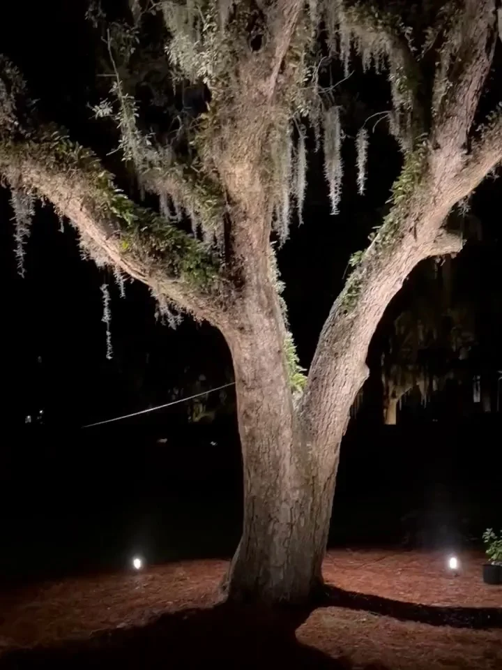
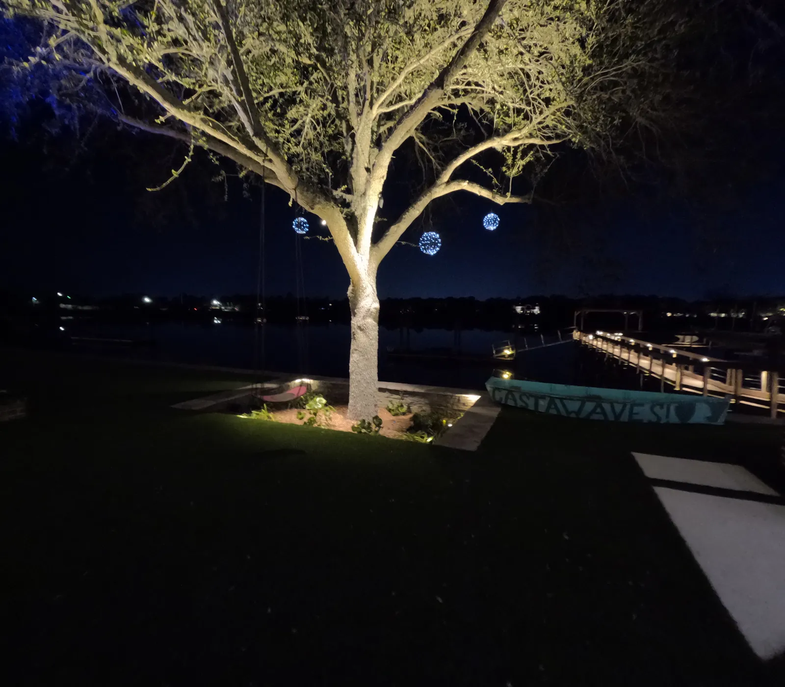
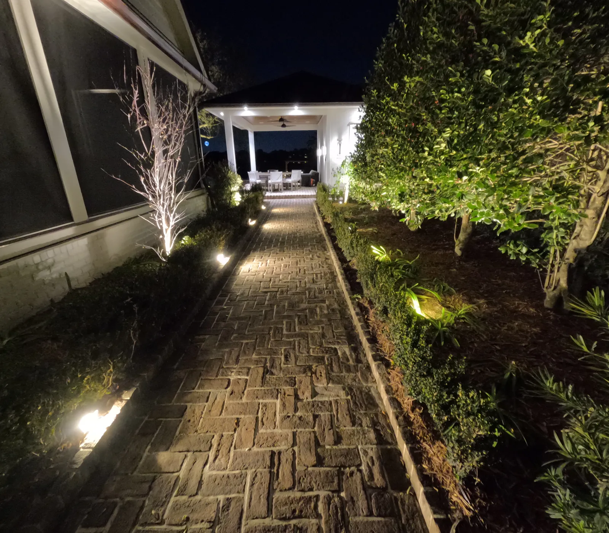
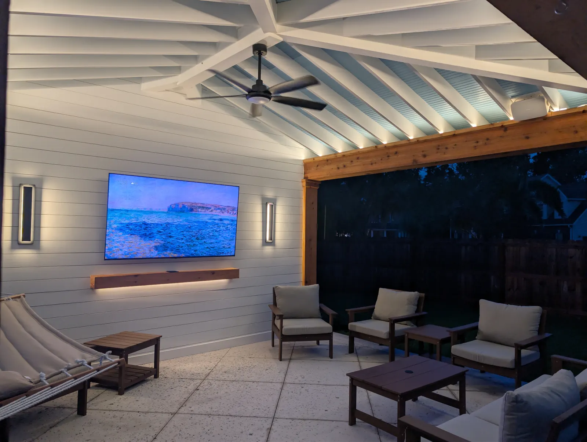
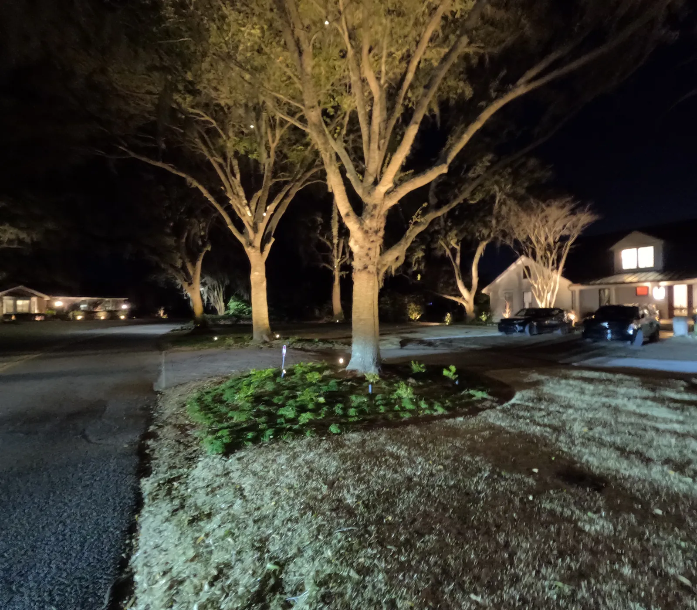

Eleven Landscape Lighting Ideas We Actually Install

The Cheapest Thing That Changes How a Yard Feels
Lighting is the cheapest thing on this site that changes how a property feels, and the easiest to get wrong. These are the eleven we actually install, roughly in the order we would spend the money.

1. Uplight One Good Tree
If you do nothing else, do this. Two fixtures under a Japanese maple turn a nice tree into the whole garden after dark. Under a live oak the effect is larger still, and it is visible from the street, from the porch and from inside the house — one fixture doing three jobs.

2. Hang Pendants in a Live Oak
On this waterfront yard the live oak is uplit from below and hung with pendant lights from its limbs, so the tree itself becomes the light fixture over the lawn.

3. Light the Steps
Not decoration — the steps are the actual hazard in a dark yard. This is the first thing we light on any property, before anything ornamental.

4. Path Lights Along the Walk
Low fixtures spaced so nobody has to guess where the edge is. Spacing matters more than fixture choice: evenly spaced pools of light read as designed, random ones read as a runway.

5. Wash the Front of the House
Grazing light up a facade shows texture — brick, stucco, siding — and gives the house presence from the street without lighting the windows.
6. Down Lighting From a Canopy
Fixtures set up in a tree cast soft moonlight across the lawn. It is the most natural-looking effect available and nobody can see where it comes from.

7. Hide Tape Lighting Above the Beams
On our West Ashley cabana, tape lighting tucked above the beams washes the open rafter ceiling. You see the ceiling, not the fixture, and it is what makes the structure usable at night.
8. Wall Sconces at Eye Level
Sconces give a covered space human scale. Ceiling lights alone make an outdoor room feel like a parking garage.

9. Bistro Lights Over the Patio
The cheapest way to define an outdoor room. Run them properly, on their own circuit, rather than off an extension cord.
10. Light a Water Feature From Within
A fountain lit from inside reads at night as movement rather than a dark shape. It is a small addition when the feature is being built and an awkward retrofit afterwards.

11. Put It All on a Timer — and Ideally an App
Every system needs a transformer and a timer, and we recommend a timer over a photocell. The better controllers let you change the schedule from your phone rather than in the dark beside the garage.
Budget about $200 a light installed, plus the transformer. The fixtures are low voltage, in aluminum or brass — brass being the upgrade worth making on a property you intend to keep.
Planning a system? See landscape lighting, or how a lighting system should be designed.
Frequently Asked Questions
What should I light first in my yard?
Steps and pathways, because they are the real hazard in the dark. Then trees, with up lighting and down lighting, then accent lighting on columns, the house and focal points.
How much does landscape lighting cost per light?
About $200 a light installed as a starting point, plus a transformer, which every system needs.
What is the most dramatic lighting effect?
Uplighting a mature tree. A single well-lit live oak is visible from the street, the porch and inside the house.
Should landscape lighting be on a timer?
Yes, and we recommend a timer over a photocell. Every system needs a transformer and a timer, and the nicer controllers can be run from an app on your phone.
See It Built
Projects where we put this into practice.


Planning a Project of Your Own?
See everything we design and build, or get in touch to talk through your ideas with Doug and Zach.